Фундамент дизайна
Композиция
Композиция — правильное размещение и соотношение различных компонентов веб-страницы, таких как текст, изображения, кнопки, блоки и другие элементы.
Паттерны человека
Паттерны — это наши "стандартные" способы реагировать, думать и действовать в различных контекстах. Такие как типичные способы реагирования на стресс, например, переедание или уход в себя.
Линия взгляда
Линия взгляда — это паттерн, который описывает направление, куда человек смотрит и куда обычно обращает внимание во время взаимодействия с веб сайтом.
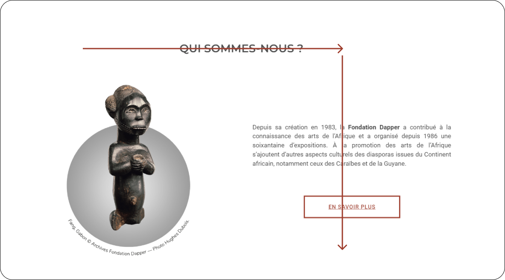
Скриншот сайтаDapper Fundation
Есть специальные Eye Tracking-устройства или программное обеспечение, которые могут записывать и анализировать взгляд пользователя. Раньше проводить такие исследования было необходимо, но теперь это не нужно. Достаточно научиться слушать себя, чтобы понять, куда направлен взгляд пользователя.
Переферическое зрение
Переферическое зрение - боковое зрение, зрение, которое воспринимает картинку, располагающуюся вне области центрального зрения.
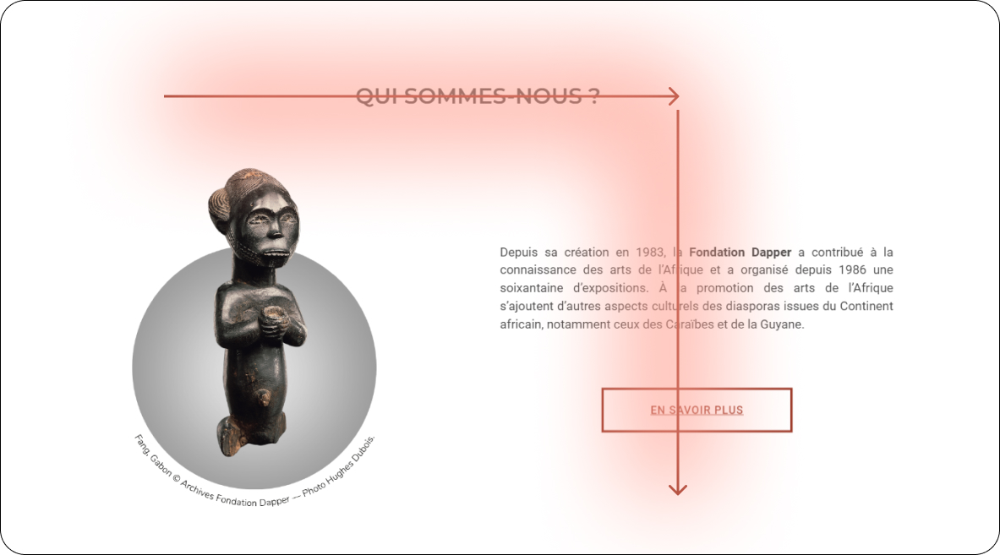
Скриншот сайтаDapper Fundation
Слева направо / Сверху вниз
Принцип слева-направо соответствует естественному направлению, в котором люди в большинстве культур читают и просматривают информацию.
Принцип сверху-вниз основан на том, что люди привыкли читать и просматривать контент сверху вниз.
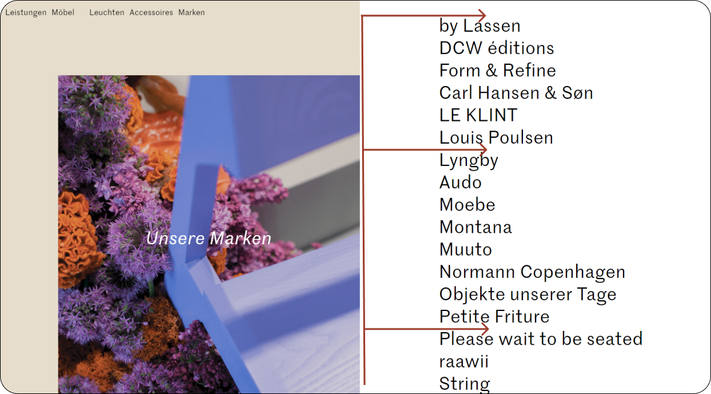
Скриншот сайтаGoldkant Interior
Пользователи могут легко найти основные элементы (меню, контакты, призывы к действию) и последовательно просматривать информацию в соответствии со своими ожиданиями.
Принципы создания композиции
Равновесие
Для того чтобы достичь равновесия в композиции веб-страницы, нужно принять за факт, что каждый элемент и объект на странице имеет так называемый вес. Вес объекта или элемента можно оценить только визуально. Распределяй элементы так, чтобы они выглядели сбалансированными на странице.
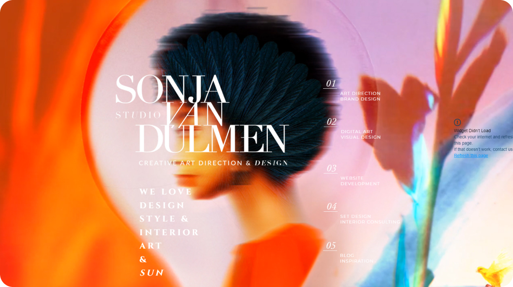
Скриншот сайта Sonja Van Duellmen
Крупное изображение занимает центральное место и формируют визуальный акцент. Текстовые блоки, кнопки и другие элементы более компактны и уравновешивают "визуальный вес" страницы. Таким образом, достигается гармоничный баланс между основным контентом и вспомогательными элементами.
Единство
Для достижения единства в композиции веб-страницы необходимо предусмотреть использование повторяющихся элементов.
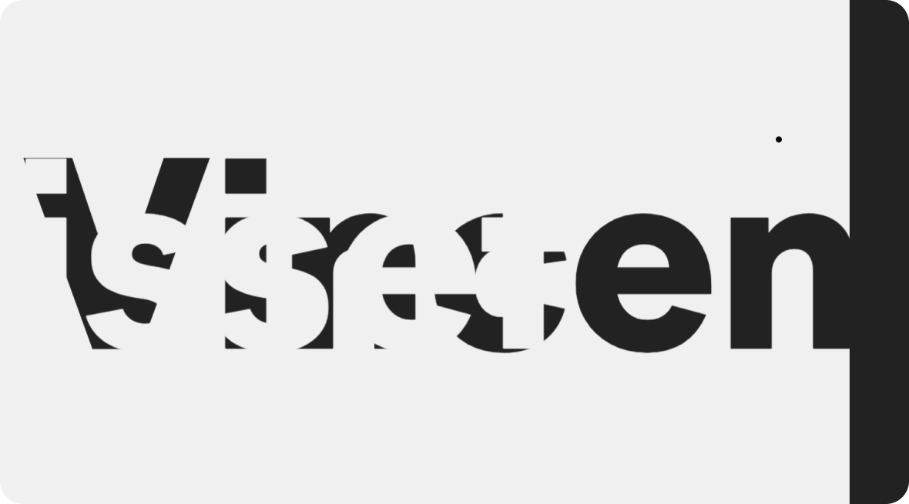
Скриншот сайта Vincent Saïsset — Portfolio
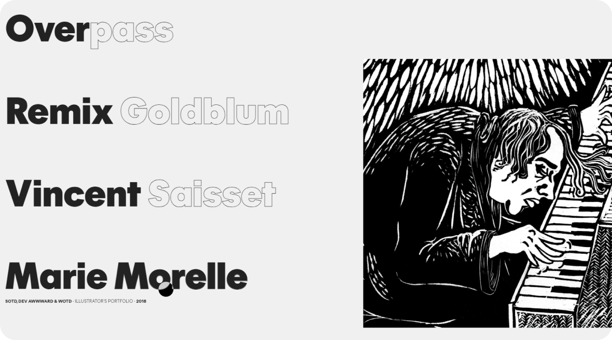
Скриншот сайта Vincent Saïsset — Portfolio
Весь сайт выдержан в приглушенной, сдержанной цветовой палитре. На сайте используется ограниченное количество шрифтовых гарнитур - не более 3-4. Весь визуальный контент - иконки, иллюстрации, фотографии - выдержан в единой стилистике. Повторяющиеся паттерны, формы и цвета создают ощущение последовательности и целостности.
Иерархия
Иерархия определяет относительную важность и приоритетность элементов на странице. Это достигается с помощью размера, расположения, контрастности и других визуальных средств. Ключевые элементы, такие как логотип, навигация, призывы к действию, должны занимать наиболее заметные позиции. Иерархия помогает организовать информацию и направлять внимание пользователей в нужном порядке.
Скриншот сайта April Ford
Для выделения наиболее важных элементов используются различные визуальные приемы:
- Заголовки секций имеют более крупный размер шрифта и жирное начертание.
- Контрастный фон за некоторыми секциями дополнительно акцентирует их.
- Кнопки призыва к действию ("Связаться") отличаются цветом и размером.
Приемы работы с композицией
Правило третей
Воображаемо раздели пространство или кадр на 9 равных частей с помощью двух горизонтальных и двух вертикальных линий. Таким образом ты получишь 4 точки пересечения этих линий. Наиболее важные элементы композиции (например, основной объект, горизонт, точки фокуса) должны располагаться на этих точках пересечения линий или вдоль самих линий.
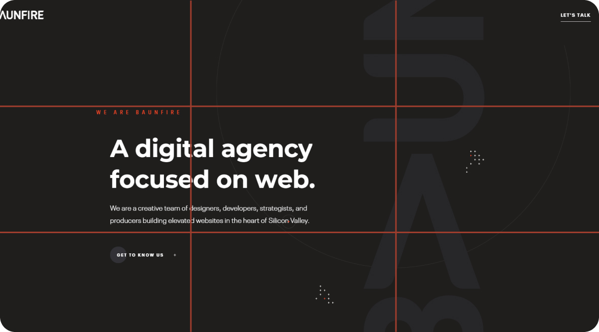
Скриншот сайта Baunfire
Золотое сечение
Золотое сечение, известное также как золотая или божественная пропорция — это соотношение частей и целого друг к другу, которое равно 1,618. Если говорить о процентном соотношении, то части целого соотносятся друг с другом и с целым как 62% относятся к 38%.
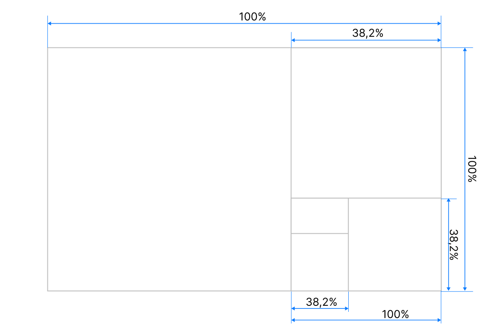
Такое деление создает пропорции, которые воспринимаются человеческим глазом как визуально гармоничные и привлекательные.
Не каждая композиция веб-страницы обязательно соответствует золотому сечению. Большинство дизайнеров не используют точные математические расчеты для размещения элементов в соответствии с этим принципом. Вместо этого они руководствуются своим визуальным восприятием и опытом.
Дело в том, что золотое сечение - это скорее общее руководство к действию, нежели жесткое правило, которое нужно соблюдать буквально. Многие дизайнеры применяют этот принцип более интуитивно, ориентируясь на гармоничный баланс и визуальный комфорт для пользователя.
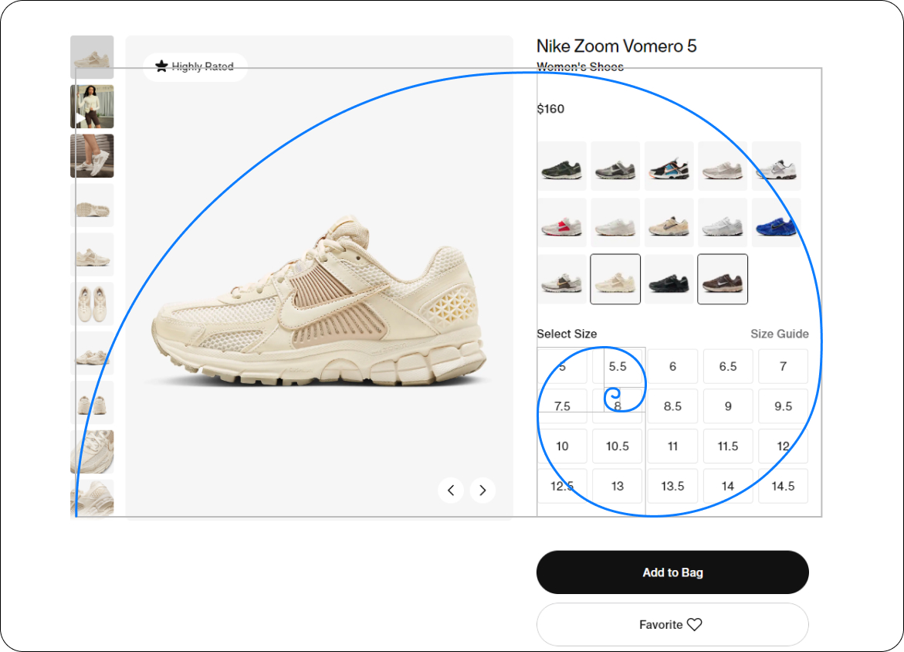
Скриншот сайта Nike
Гештальт принципы
Гештальт-принципы — это набор базовых закономерностей, которые описывают, как наш мозг воспринимает и организует визуальную информацию.
Проще говоря, гештальт-принципы объясняют, почему мы видим определенные образы и взаимосвязи между различными элементами, даже если они не связаны напрямую.
Принцип сходства
Мы объединяем в группы элементы, которые выглядят похожими по форме, цвету, размеру или другим визуальным признакам.
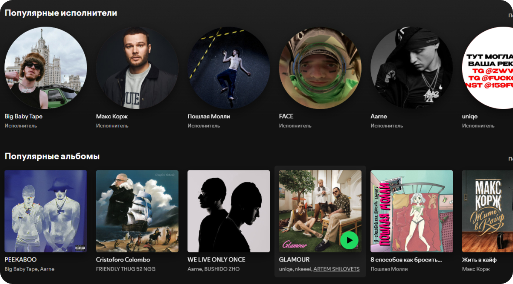
Скриншот сайта Spotify
Отдельные блоки выделены для различных типов контента - такие как "Популярные исполнители", "Популярные альбомы". Это позволяет легко найти интересующий пользователя тип медиа.
Принцип близости
Мы воспринимаем элементы, расположенные рядом, как связанные между собой.
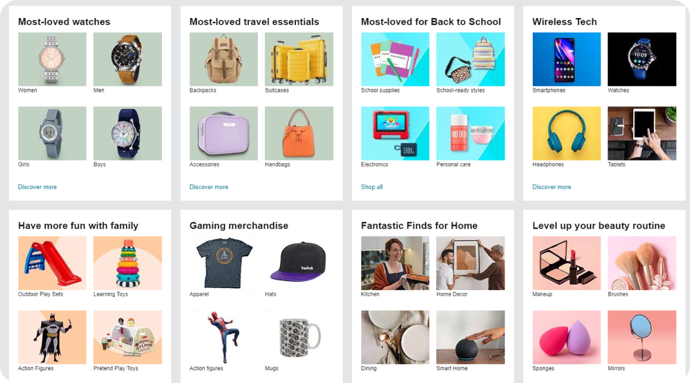
Скриншот сайта Amazon
На сайте Amazon товары, относящиеся к одной категории, расположены рядом друг с другом, образуя визуальные блоки.
Принцип замкнутости
Мы склонны дополнять незаконченные формы, создавая в своем восприятии замкнутые фигуры.
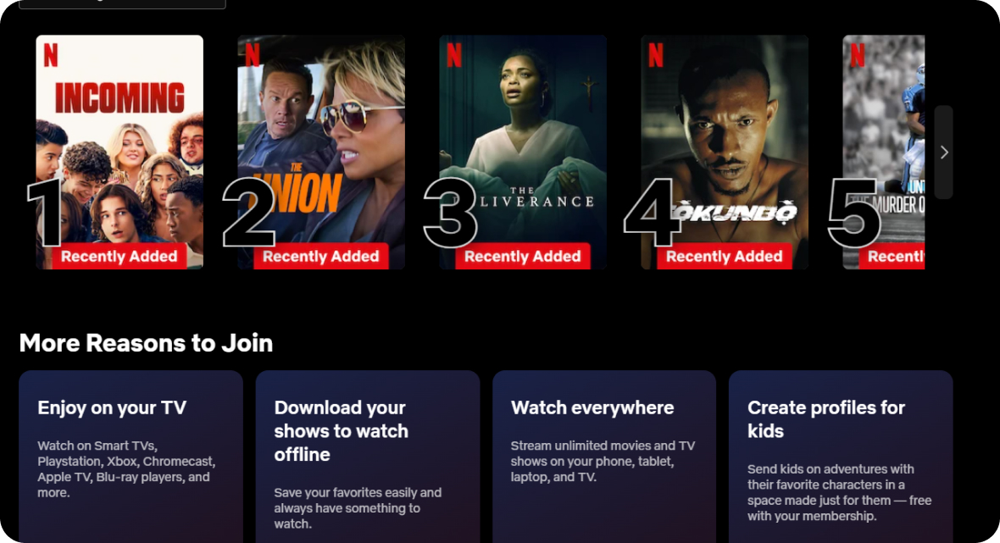
Скриншот сайта Netflix
На сайте Netflix обложки фильмов и сериалов оформлены в виде четких прямоугольных рамок, создавая ощущение законченности.
Принцип непрерывности
Мы воспринимаем плавные линии и траектории как единое целое, даже если они прерываются.
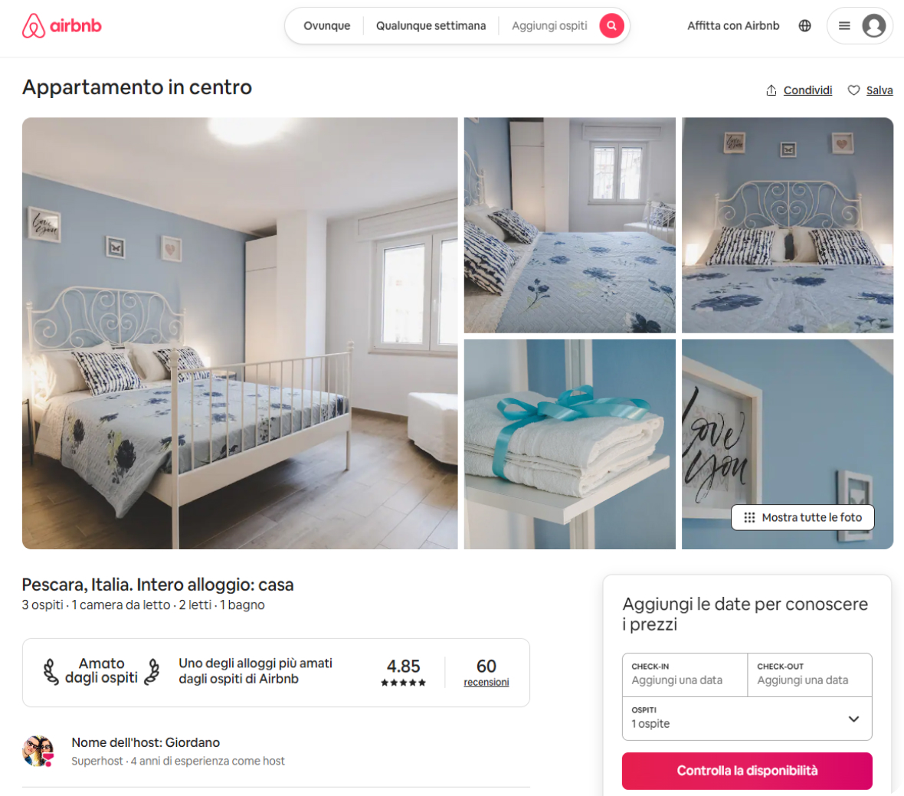
Скриншот сайта Airbnb
На сайте Airbnb при переходе между страницами сохраняется общая стилистика дизайна, поддерживая визуальную непрерывность.
Принцип фигуры и фона
Мы способны выделять из общего визуального поля фигуру (основной элемент) и фон (второстепенные элементы).
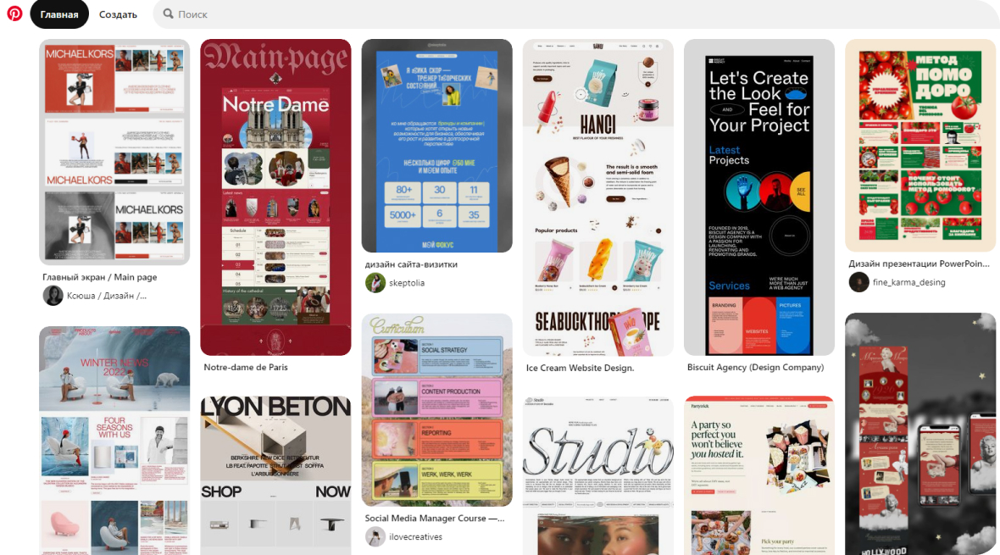
Скриншот сайта Pinterest
На сайте Pinterest основные "фигуры" - фотографии пользователей - четко выделяются на нейтральном фоне.
Итоги
Паттерны человека
1. Линия взгляда. Человек обычно начинает восприятие информации с верхнего левого угла и движется вправо и вниз. Важно размещать ключевые элементы (например, заголовки и кнопки) в этих областях для привлечения внимания.
2. Периферическое зрение. Периферическое зрение замечает движения и общие формы, но не детали. Это полезно для привлечения внимания к важным элементам с помощью контрастных цветов или анимаций.
3. Слева направо / Сверху вниз. Информация воспринимается сверху вниз и слева направо. Дизайн должен учитывать это направление, создавая естественный поток информации, чтобы пользователю было проще ориентироваться.
Принципы создания композиции
1. Равновесие. Равновесие обозначает равномерное распределение визуальных элементов, что может быть достигнуто как симметрично, так и асимметрично. Это помогает создать гармонию и облегчить навигацию, улучшая общее восприятие.
2. Единство. Единство достигается через согласованность стиля и элементов, что создает целостное восприятие и помогает пользователям осознать связи между различными компонентами. Это также укрепляет идентичность бренда и улучшает визуальный опыт.
3. Иерархия. Иерархия организует элементы по уровню важности, позволяя пользователям легко выделять ключевую информацию. Методы создания иерархии включают использование различных размеров, цветов и расположения элементов.
Приемы работы с композицией
1. Правило третей. Правило третей делит изображение на девять равных частей с помощью двух вертикальных и двух горизонтальных линий. Ключевые элементы размещаются вдоль этих линий или на их пересечениях, что создает баланс и динамику, а также привлекает внимание к важным частям композиции.
2. Золотое сечение. Золотое сечение — это пропорция, делящая линию на две части так, что отношение всей длины к большей части равно отношению большей части к меньшей. Это создает гармоничную и привлекательную композицию, направляя взгляд зрителя и делая элементы более эстетичными.
Гештальт принципы
1. Принцип сходства.Элементы, которые выглядят похоже (по форме, цвету или размеру), воспринимаются как связанные. Этот принцип помогает создать группы и упрощает восприятие информации.
2. Принцип близости.Элементы, расположенные близко друг к другу, воспринимаются как единое целое. Это создает визуальные группы и помогает организовать информацию на странице.
3. Принцип замкнутости.Завершенные формы воспринимаются как целостные, даже если некоторые элементы отсутствуют. Это позволяет зрителю интуитивно "додумывать" недостающие части композиции.
4. Принцип непрерывности.Элементы, расположенные на линии или следуют определенной кривой, воспринимаются как связанные. Этот принцип создает плавные переходы и ведет взгляд зрителя по композиции.
5. Принцип фигуры и фона.Этот принцип предполагает четкое различие между объектом (фигурой) и окружающим его фоном. Хорошо разработанный контраст помогает выделять ключевые элементы и улучшает восприятие.
Примеры заданий для практики
Применение правила третей
Создай макет веб-страницы с использованием сетки, разделенной на третьи (3x3). Размести ключевые элементы, такие как заголовок, изображение и кнопки на пересечениях линий или вдоль них.
Применение принципа сходства
Разработай интерфейс для приложения, где разные категории информации (например, новости, статьи, видео) визуально связаны при помощи одинаковых цветов или шрифтов.
Принцип близости
Создай дизайн для блога, где разместите статьи, категории и теги. Используй принцип близости, чтобы визуально группировать похожие элементы.
Исследование принципа замкнутости
Создай логотип или иконку, используя элементы, которые формируют замкнутые фигуры, даже если некоторые детали отсутствуют.
Принцип непрерывности
Создай дизайн лендинга с элементами, которые ведут взгляд зрителя (например, стрелки, линии или направляющие формы).
Принцип фигуры и фона
Разработай страницу с интенсивным контрастом между текстом, изображениями и фоном, чтобы легко выделить ключевые элементы.